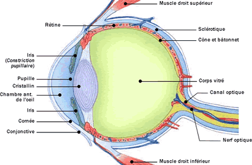

Les pathologies oculaires
| La
conjonctivite La keratite L'abces de la cornee L'ulcere corneen L'hemorragie sous conjonctivale L'hypnopion |
L'hyphema Le keratocene Le chalazion L'exophtalmie L'enophtalmie L'endophtalmie |

La conjonctivite est l'inflammation de la conjonctive : muqueuse tapissant l'interieur des paupieres et de la face anterieure (en avant de la sclerotique).
La keratite est l'inflammation de la cornee.
L'abces de la cornee est une infection corneenne avec collection de pus intra-corneen. Il survient surtout chez les porteurs de lentilles.
L'ulcere corneen est une perte de la substance corneenne.
L'hemorragie
sous conjonctivale
Tache de sang entre les conjonctives et la sclere.
L'hypnopion est un depet purulent dans la chambre anterieur de l'œil.
L'hyphema est un depet sanguin dans la chambre anterieure de l'œil.
Le keratocene est une dystrophie corneenne se manifestant par une protrusion non inflammatoire de la cornee dans sa region axiale.
Le chalazion est une inflammation et l'enkystement d'une ou plusieurs glandes de Meibomius au niveau de la paupiere. Le chalazion forme une petite boule assez dure situee sous la peau et qui ne fait pas tres mal. Il peut se former lorsque le petit canal qui draine une glande de Meibomius se bouche.
L'exophtalmie est une propulsion en avant du globe oculaire.
L'enophtalmie est un enfoncement anormal du globe oculaire dans l'orbite.
L'endophtalmie est une infection intraoculaire.
Voir aussi :
|
Accueil
| Sciences infirmieres |
Soins et techniques
|
Pharmacologie et Therapeutiques
|
Examens
biologiques |
Examens medicaux
| Version imprimable e Samir ISP tous droits reserves design : xgraphik.com modifie par M. Pitte |
 haut
de page
haut
de page